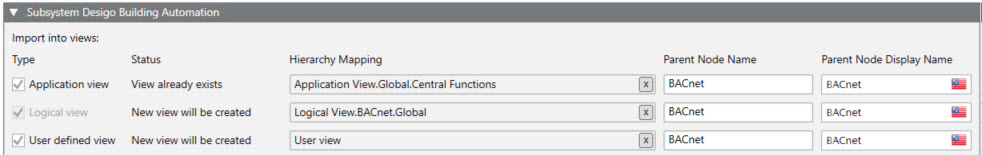

Define Views for System Browser
- You are in step 5 of 8.

- Select the Application View check box. Take over the entries from step 2 for Superposed object name andSuperposed object display name.
- Select the Logical View check box (always selected). Take over the entries from step 2 for Superposed object name andSuperposed object display name.
- (Optional) Select the User View check box. Take over the entries from step 2 for Superposed object name andSuperposed object display name.
- Click Next Page
 .
.

If you have two or more networks, you can enter the same information as for network 1 in columns Superposed object name and Superposed object display name. This imports the project data to the same folder structure of the System Browser. The entry fields must be completed.